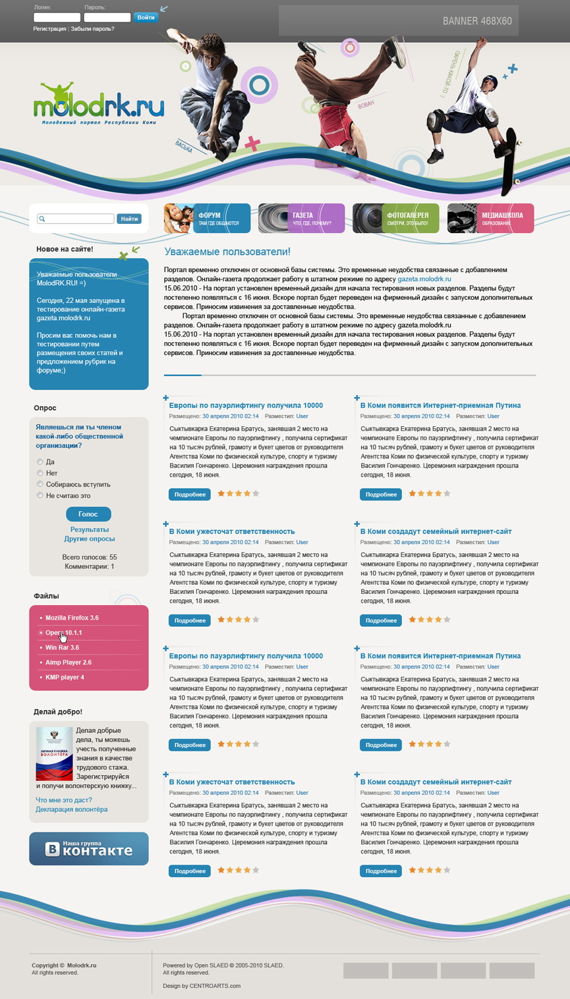

Простота
Интуитивный интерфейс: управлять сайтом так же просто, как работать с документами или почтой.
Открытый код · MIT · PHP 8.4
Система управления содержимым сайта: простая в настройке, с высоким уровнем безопасности, высокой скоростью работы и практически неограниченным потенциалом расширения. Вот что на ней уже работает.



Четыре опоры системы, ради которых эти сайты и стоят на SLAED.
Интуитивный интерфейс: управлять сайтом так же просто, как работать с документами или почтой.
Модули, блоки, темы и расширения: 685 дополнений в файловом архиве проекта.
Низкое потребление серверных ресурсов: страница собирается за 12 запросов и 5.2 MB памяти.
Логирование действий, отслеживание инъекций и несанкционированных запросов из коробки.
Весь каталог сайтов проекта: снимок и оценка посетителей у каждого.